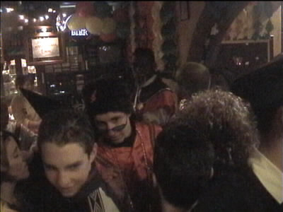
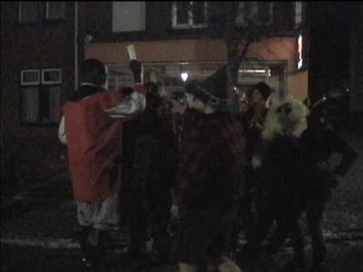

| Fastelaaa[Fastelaovend febberwari 2001 |

Hier zonder muts is hij al beter herkenbaar.
Hier in gesprek met K2.
We bevinden ons nog steeds in oud bruin café "Bie Liebes".
Beavis de gynaecoloog werft klandizie.
Marco vraagt aan Eddie Vrede of hij ook voetballen kan.
Onze kixe verdediger is door het publiek ontdekt. Opeens is
het hele dorp Roda-fan......
....en wil iedereen met hem op de foto.

Handig om wat fankaartjes bij de hand te hebben!
Deze persoon wiens naam ik ben vergeten wenst de groeten
te doen aan de hoofdredacteur van The Voice of Kaalhei.
Frieten, frieten! En wij maar denken dat roti zijn lievelings-
hapje was.
V.l.n.r. Koempel, Beavis, Toppel Ino.
Ed bestelt twee glazen dubbeldrank.
Regilio ziet dat het tijd is om te gaan want morgenvroeg moet
er getraind worden. We besluiten uit solidariteit erbij te zijn!
10.30 uur aan de andere kant van de nacht en 40 km ten
zuiden van Posterholt. De krachttraining zit er op en Sef
treedt fier en welgeluimd het oefenveld tegemoet.
In kleine groepjes volgen de spelers.
Vicelich op veler verzoek....
van Dutchchick.
Binnenkort historie.
Jool is jool.
Zal mich egaal zeen wie ze vool. Er waren trouwens circa
50 toeschouwers aanwezig bij de training.
Sneeuw op Kaalheide. We besluiten dat dit stadion een
sportmonument moet worden.
Ondertussen wordt er druk gespeculeerd over de nieuwe
trainer bij Roda. Of wordt het wellicht een trainster?
Hier wordt getest wie onze ploeg het best kan sturen vanaf de
zijlijn. Marco en Michel gesticuleren driftig, maar Daniëlle
heeft de meeste voetbalmeters in de benen. Moeilijk....

Hoewel...K. heeft natuurlijk het koele overzicht en staat met
beide voeten op de grond!
©KPD